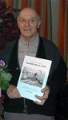
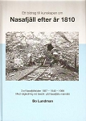

Bo Sixten Lundman
Handelslärare, studierektor, rektor, planerare vid Strömbackaskolan, Piteå, författare.
| Född: | 1938-08-06 Piteå lfs, Piteå sn. [1] |
|---|
| Vigsel: | 1961-07-01 Piteå lfs, Piteå sn. [2] |
|---|
| Levde: | 1970 Rågrindsv 17, Öjebyn, Piteå lfs, Piteå kn. [3] |
|---|
| Levde: | 1980 Öjebyn 33:31, Rågrindsv 17, Öjebyn, Piteå kn. [4] |
|---|
| Levde: | 2019 Piteå, Piteå sfs, Piteå kn. [5] |
|---|
| Barn: |
|---|
| Bo Kenneth Lundman (1962 - ) |
| Pär Sixten Lundman (1964 - ) |
Personhistoria
| Årtal | Ålder | Händelse |
|---|
| 1938 |
|
Födelse 1938-08-06 Piteå lfs, Piteå sn [1] |
| 1939 |
1 år |
Makan Laura Elvi Anneli Mustonen föds 1939-12-28 Finland [6] |
| 1961 |
22 år |
Vigsel Laura Elvi Anneli Mustonen 1961-07-01 Piteå lfs, Piteå sn [2] |
| 1962 |
24 år |
Sonen Bo Kenneth Lundman föds 1962-11-16 Öjebyn, Piteå lfs, Piteå sn [3] |
| 1964 |
26 år |
Sonen Pär Sixten Lundman föds 1964-09-25 Öjebyn, Piteå lfs, Piteå sn [3] |
| 1970 |
|
Levde Laura Elvi Anneli Mustonen 1970 Rågrindsv 17, Öjebyn, Piteå lfs, Piteå kn [3] |
| 1973 |
35 år |
Modern Anna Linnéa Ekman dör 1973-10-05 Öjebyn, Piteå lfs, Piteå kn [7] |
| 1979 |
40 år |
Fadern Oskar Harald Andersson Lundman dör 1979-07-25 Öjebyn, Piteå lfs, Piteå kn [8] |
| 1980 |
|
Levde Laura Elvi Anneli Mustonen 1980 Öjebyn 33:31, Rågrindsv 17, Öjebyn, Piteå kn [4] |
| 2019 |
|
Levde Laura Elvi Anneli Mustonen 2019 Piteå, Piteå sfs, Piteå kn [5] |
Dokument
Källor
| [1] | SCB Födda BD Piteå lfs 138/1938, Mtl Norrbottens län 1971 |
| |
| | |
| [2] | Mtl Sveriges befolkning 1975 |
| |
| | |
| [3] | Mtl Norrbottens län 1971 |
| |
| | |
| [4] | Mtl Norrbottens län 1981 |
| |
| | |
| [5] | www.ratsit.se/sok/avancerat/person |
| |
| | |
| [6] | Mtl Sveriges befolkning 1960 |
| |
| | |
| [7] | Mtl 71 / RTB 73 |
| |
| | |
| [8] | RTB 79 / SPAR 80 |
| |
|
|  |
| 2011-02-03. Författaren Bo Lundman från Piteå, som skrivit en bok om Nasafjäll, fick stora applåder för sina filmvisningar och kompletterande skildringar om Nasafjäll och Heikka-Maria. |
| |
|  |
| 2011-02-11 |
|
{kind=link}
{kind=link}